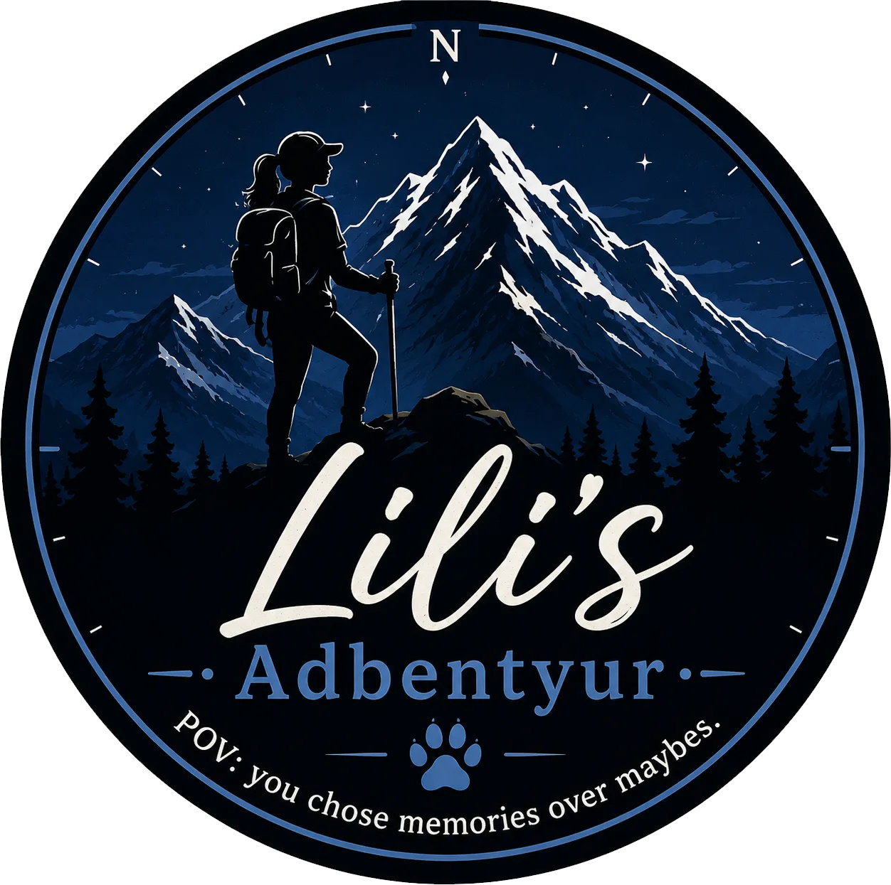
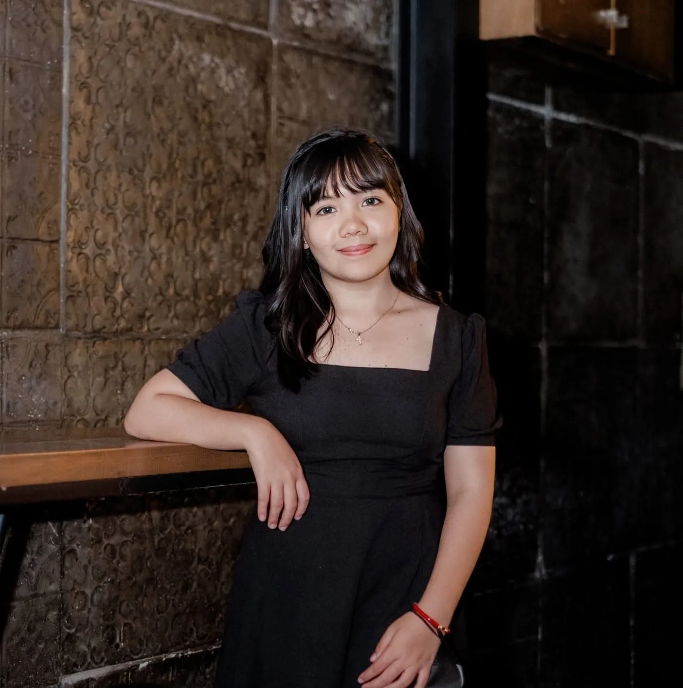

Web Design
I design clean, responsive, user-focused websites with strong visual hierarchy, usability, and consistency.

WEB DESIGNER · DESIGN QA · TOUR COORDINATOR
Hi, I’m Lyndy Dalida. I’m a creative and detail-oriented Web Designer and Web Design QA Specialist, and I also organize and coordinate hiking and outdoor experiences.

01 / ABOUT
I’m a creative and detail-oriented professional with around six years of experience in web design and two years focused on design quality assurance.
My work combines visual design, responsive implementation, usability, testing, and attention to detail. Outside the digital space, I’m also a Tour Organizer/Coordinator who helps plan and coordinate hiking and outdoor adventures.
Whether I’m building a website or coordinating a trail experience, I enjoy turning ideas into organized, engaging, and meaningful experiences.
02 / WHAT I DO
I design clean, responsive, user-focused websites with strong visual hierarchy, usability, and consistency.
I review websites for visual accuracy, responsiveness, usability, cross-browser consistency, and overall design quality.
I help organize hiking and outdoor trips, coordinate participants, manage event updates, and keep everyone informed and prepared.
Experienced with WordPress, Elementor, Elementor Pro, Beaver Builder, Figma, responsive QA, UAT, and structured task coordination.
03 / WORK
A combination of digital projects, quality assurance, and outdoor event coordination.
Responsive web design · UI/UX · QA
Cross-browser · Responsive · UAT · Regression
Tour organization · Coordination · Participant updates
04 / GALLERY
05 / CONTACT
I’m open to web design, design QA, and tour or hiking coordination opportunities.
lilibelskun@gmail.com ↗